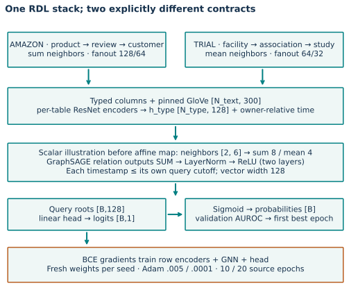
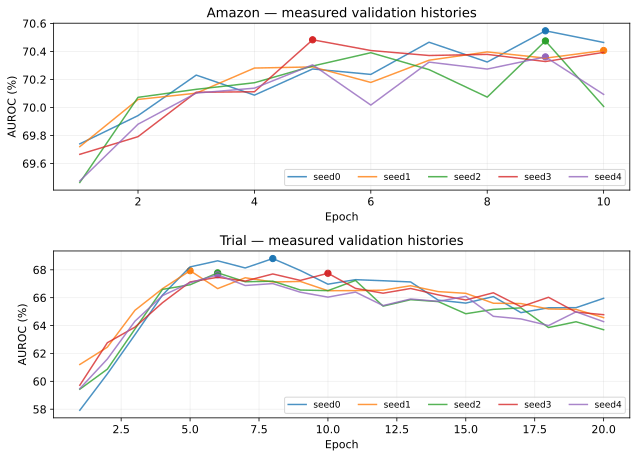
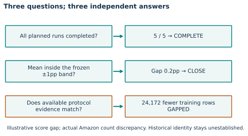
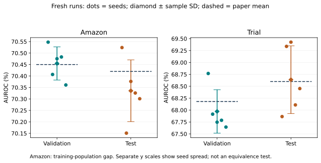

Year 4 · Quarter 2 · Checkpoint 140
Defend a two-task RDL reproduction
1 · Turn two scores into a defensible result¶
Lessons 138 and 139 established two domain pipelines. They left a harder question: what evidence lets you say that you reproduced a baseline? A plausible score can survive a broken join, a missing seed, a changed population, or test-driven selection. This checkpoint asks you to defend the entire chain.
Your tangible win is a two-task report whose claims can be regenerated from query identities, checkpoint histories and saved predictions. Allow 25 minutes for the core lesson and a separate lab/defense session. Read RelBench v1 Table 6 and Appendix B.2; compare the source configuration before looking at scores.
Retrieve first: why does the same entity at two cutoffs create two queries? What happens to a trial with no qualifying future primary analysis? Which data may choose an epoch?
2 · Freeze two contracts before training¶
A common model does not imply identical hyperparameters or identical query semantics. Preserve each task's released recipe. The comparison is replication against two named baselines, not a controlled experiment about domain difficulty.
| Contract | Amazon user-churn | Trial study-outcome |
|---|---|---|
| Query | Customer and cutoff | Study and cutoff |
| Eligible population | At least one review in the previous 91 days | Started study with a qualifying analysis in the next 365 days |
| Positive | No review in the next 91 days | Minimum qualifying primary p-value ≤ .05 |
| Neighbor aggregation | Sum | Mean |
| Per-hop fanout | 128, 64 | 64, 32 |
| Adam learning rate | .005 | .0001 |
| Released epochs | 10 | 20 |
| Batch / width / layers | 512 / 128 / 2 | 512 / 128 / 2 |
| Selection | First maximum validation AUROC | First maximum validation AUROC |
Five new runs per task use seeds 0–4. Binary cross-entropy trains both. A released epoch stops after steps > 2000, so Amazon uses 2,001 batches per epoch, not a complete pass through its 4,708,383 training queries. “Full data” means the full released population is available; it does not mean visiting every row in every epoch. Trial visits all 11,994 training queries each epoch. Released trainer
The source pin is 9aa346267c2e1c560bd92da07d6f4ad1ca2f0639. Preprocessing uses the full test-cutoff database snapshot, the released feature-type inference and pinned GloVe text features. We reuse checksum-verified materializations; we initialize and train new weights. The complete trainer and model implementation are visible in the notebook, alongside a fresh-materialization path.

Trace one facility → association → study path. Each table's row encoder produces 128 channels; the query owner's time encoding is added; relation-specific GraphSAGE outputs are summed and normalized within each layer. The study root reaches the linear head after two layers. A customer → review → product path uses the same stack with the Amazon recipe. We transfer program structure, not learned weights.
3 · Freeze the checkpoint using validation only¶
The best training loss is not the checkpoint rule. The best test score is not the checkpoint rule either. Record every epoch, then select the first strict maximum validation AUROC. A later tie must keep the earlier epoch. Re-evaluating the selected weights may draw new sampled neighborhoods; its validation score can differ from the selection score.
Predict: validation scores are .70, .75, .75; test scores are .90, .60, 1.00. Which epoch must survive? Commit before changing the selector.
TODO 1 — select_checkpoint(history). Require a complete ordered history with finite validation AUROCs. Return the epoch under the frozen rule. The CHECK rejects choosing by test, taking the last tie, skipping epochs or accepting NaN. Use your function on every fresh author history.

We do not rerun “unlucky” seeds or retune after reading the test table. The same public test sets appeared in earlier lessons; these runs are fresh training, not new pristine holdouts. They support a replication exercise, not a new confirmatory discovery.
4 · Score the right query, not the current row position¶
Suppose queries arrive as (entity 4, day10), (entity 4, day20), (entity 8, day10), but predictions arrive in reverse order. A positional zip evaluates a different claim. Joining on entity alone also merges two distinct forecasts. Require unique (entity, cutoff) keys on both sides, equal populations, and finite probabilities before aligning.
TODO 2 — align_predictions(query_keys, prediction_keys, predictions). Return probabilities in canonical query order. Missing, duplicate, unexpected or nonfinite predictions must fail. The lab shuffles real prediction rows and checks that the AUROC stays unchanged. Your output feeds the scorer; it is not an unused exercise beside a hidden answer.
AUROC measures positive–negative ordering, with half credit for ties. The portable notebook provides the rank implementation and verifies it against scikit-learn. No threshold or calibration claim follows from AUROC alone.
Temporal correctness is a separate audit: every sampled timestamp must be at or before its owning query cutoff, at every hop. Untimestamped metadata and inferred trial timestamps still lack historical arrival/version records. Passing the released sampler audit does not prove prospective availability. Trial timestamp construction · Amazon audit
5 · Keep three verdicts instead of one green badge¶
- Execution: did every planned seed finish the released protocol?
- Numerical agreement: is the mean within the predeclared ±1 percentage point band?
- Protocol evidence: do the available source/data records align, and what remains missing?
These questions can have different answers. For Amazon, the archived training table has 24,172 fewer queries than paper Table 2; held-out counts match. A close AUROC cannot repair that difference. Clinical archive counts agree, but historical RNG/environment identity remains unestablished on both tasks. Count evidence

Predict: four of five runs finish, all close to the paper. May their mean qualify the planned experiment? Then suppose all five finish but the archive differs. Which verdict changes?
TODO 3 — reproduction_verdict(...). Require exactly the planned seed set before producing a mean or closeness verdict. Report sample SD (ddof=1) and a separate protocol status. A missing seed yields INCOMPLETE and NOT_EVALUATED, not an average of the convenient survivors. Reject unexpected seeds and invalid scores.
The ±1pp rule is a descriptive comparison, not a statistical equivalence test. Seed SD measures variation from this training procedure conditional on this split and preprocessing. It is neither a confidence interval over future deployments nor a cross-database uncertainty estimate. Seed0 on Amazon and seed0 on trial are unrelated runs, not paired observations for a cross-domain test. Two tasks also do not establish general RDL superiority.
6 · Inspect the fresh author evidence¶
Predict before revealing: which task should have wider seed variation? What evidence would make you reject a close mean? Then compare the points, not just the aggregate.
| Task / split | Fresh AUROC % ± sample SD | Paper AUROC % | Score | Protocol |
|---|---|---|---|---|
| amazon / val | 70.4547 ± 0.0724 | 70.45 | CLOSE | GAPPED |
| amazon / test | 70.3356 ± 0.1347 | 70.42 | CLOSE | GAPPED |
| trial / val | 67.9720 ± 0.4558 | 68.18 | CLOSE | ALIGNED_WITH_RELEASE |
| trial / test | 68.6378 ± 0.7115 | 68.60 | CLOSE | ALIGNED_WITH_RELEASE |
Ten fresh full released-protocol fits; 3,817,310 held-out predictions independently rescored. Amazon protocol remains gapped. Historical identity and whole-paper reproduction: NOT_ESTABLISHED.

The author report checks all planned runs, full schedules, query keys, original-model checkpoint outputs, independent AUROC arithmetic and recorded temporal audits. Data/label reconstruction from L138/L139 is inherited evidence tied to the same archive hashes; it is not represented as a fresh reconstruction here. Machine-readable report · Protocol, budget and exact commands
The cloud operator reserves each attempt before dispatch. The first complete seed per task doubles as the timing pilot; remaining runs are dispatched only if the forecast fits. The shared cap is **$10 including attempts and validation**, with $3 reserved for overhead. A budget refusal produces an honest incomplete experiment, not an excuse to silently shorten training.
7 · Lab and exit defense¶
Open the prepared lab · Student notebook · Reference
Run your three live functions on the portable author evidence. Read and execute the provided small neural forward/backward trace. The full model and trainer are included below the core lab; enabling the fresh-training gate starts a separate experiment and requires the pinned GPU runtime and adequate host RAM. Default notebook execution re-scores artifacts; it does not train ten full models.
Submit a one-page defense with four paragraphs:
- Contract: name both targets, populations, splits, source, recipe and seed set; explain why the trial settings differ.
- Evidence: report every seed, mean ± sample SD, selected epochs and independently verified query counts.
- Counter-evidence: preserve Amazon's count gap, unknown historical availability, sampled evaluation variation, prior test reuse and historical identity limits.
- Verdict: state what completed, what is numerically close, and what remains unestablished. Propose one test that could weaken your conclusion.
Assessment rubric: contract accuracy, reproducible evidence, treatment of counter-evidence, and defensible scope each earn 0–2 points. Aim for at least 7/8, with no test-based selection, missing-seed averaging, or claim that a close score repairs a data mismatch. A well-supported failed reproduction can pass the learner assessment.
A passing author run is preparation for this assessment. Your checkpoint remains PENDING_WRITTEN_DEFENSE until your code and explanation demonstrate the skill. Ask the agent to challenge any unclear claim. Before Lesson 141’s composite message passing, explain what this baseline does—and why matching it does not prove it uses relational structure optimally.
Carry this forward. The next lesson changes the message itself. Use this checkpoint’s fixed-contract discipline to distinguish a new mechanism from evidence that it helps. Continue to Lesson 141.